화약류관리산업기사 (2019-03-03 기출문제)
1과목: 일반화약학
1. 니트로셀룰로오스의 교화제에 해당하지 않는 것은?
- 디페닐아민
- 니프로글리세린
- 니트로글리콜
- 미네랄젤리
(정답률: 알수없음)

2. 니트로글리세린의 분자식에 해당하는 것은?
- C3H5(OH)3
- C3H5(NO3)3
- C2H4(OH)2
- C2H4(NO3)2
(정답률: 알수없음)
3. 디니트로나프탈렌(DNN) 제조 시 주원료로 옳은 것은?
- C6H5OH
- C6H5CH3
- C6H6
- C10H8
(정답률: 알수없음)
4. 탄소3g이 산소 16g 중에서 완전연소 되었다면 연소 후 혼합기체의 부피는 표준상태에서 몇 L 인가?
- 22.4
- 19.8
- 11.2
- 5.6
(정답률: 알수없음)
5. 도폭선의 심약으로 사용할 수 없는 것은?
- TNT
- PETN
- 뇌홍
- 헥소겐
(정답률: 알수없음)
6. 화약제조에 사용되는 예감제에 해당하는 것은?
- 목탄
- 디니트로나프탈렌
- 질산나트륨
- 질산암모늄
(정답률: 알수없음)
7. 흑색화약에 대한 설명으로 옳은 것은?
- 화염과 마찰에 둔감하다.
- 흡습을 피하면 오래 저장할 수 있다.
- 발화할 때 후가스가 좋아 터널공사에 주로 사용한다.
- 인화성이 있으므로 흡습되어도 발화에는 지장이 없다.
(정답률: 알수없음)
8. 폭발온도를 저하시키기 위하여 첨가하는 소염제는?
- KCIO4
- Na2B4O7·10H2O
- Hg(ONC)2
- Pb(N3)2
(정답률: 알수없음)
9. 화약류에 대한 설명 중 틀린 것은?
- 흑색화약은 마찰이나 타격으로 발화하기 쉽다.
- 분상(紛狀)다이너마이트는 고화(고화)된 것을 그대로 사용하면 불발(不發)의 원인이 된다.
- 완연 도화선의 연소속도는 1m에 대하여 100~140초 정도이다.
- 물에 젖은 도화선은 햇빛에 충분히 건조 후 사용한다.
(정답률: 알수없음)
10. 다음 중 화약류의 동적위력에 해당되는 것은?
- 폭발속도
- 비에너지
- 연주확대치
- RWS(Relative Weight Strength)
(정답률: 알수없음)
11. 공업뇌관류 성능시험의 종류가 아닌 것은?
- 납판시험
- 둔성폭약시험
- 못 시험
- 도통시험
(정답률: 알수없음)
12. 전폭약으로 사용될 수 있는 물질로 가장 거리가 먼 것은?
- 테트릴
- 펜트리트
- 헥소겐
- 니트로글리세린
(정답률: 알수없음)
13. 다음 중 면약의 성질에 대한 설명으로 가장 거리가 먼 것은?
- 에테르 또는 아세톤에 용해한다.
- 면약은 190℃로 가열하면 발화할 위험이 있다.
- 외관은 솜과 비슷하다.
- 화합화약류로 햇빛에 자연분해되지 않는다.
(정답률: 알수없음)
14. 다음 반응식을 이용해 TNT의 1g당 산호평형 값을 구하면 약 몇 g인가?
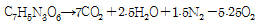
- -0.37
- -0.74
- -1.48
- -1.74
(정답률: 알수없음)
15. 다음 중 혼합 화약류만으로 나열된 것은?
- TNT, NG
- 다이너마이트, PETN
- carlit, ANFO폭약
- NG, Black powder
(정답률: 알수없음)
16. 다음 중 폭발 반응에서 산소평형 값이 (+)인 것은?
- 니트로글리세린
- TNT
- 테트릴
- PETN
(정답률: 알수없음)
17. 다이너마이트의 기제로 사용되며 또한 협심증의 치료에도 사용될 수 있는 것은?
- 니트로셀룰로오스
- 니트로글리콜
- 니트로벤젠
- 니트로글리세린
(정답률: 알수없음)
18. 제1종 도폭선을 만들 때 금속관의 재질과 심약이 옳게 짝지어진 것은?
- 수은(Hg)-NC
- 납(Pb)-TNT
- 구리(Cu)-NG
- 철(Fe)-TNT
(정답률: 알수없음)
19. 약경이 32mm의 다이너마이트를 순폭시험 한 결과 순폭도는 5이었다. 얼마 후 다시 시험을 하였더니 최대순폭거리가 96mm이었다. 순폭도는 어떻게 변화하는가?
- 2 증가
- 2 감소
- 3 증가
- 3 감소
(정답률: 알수없음)
20. 혼합 다이너마이트 중 니트로글리세린을 질산나트륨과 톱밥 등의 활성흡착제에 혼합한 반교질상의 고성능 다이너마이트는?
- 규조토 다이너마이트
- 암모니아 다이너마이트
- 블라스팅 젤라틴 다이너마이트
- 스트레이트 다이너마이트
(정답률: 알수없음)
2과목: 발파공학
21. 다음은 어느 발파현장에서 발파진동을 측정한 기록이다. 최대 의사벡터합(pseudo maximum vector sum)은 얼마인가? (단, 진동측정단위는 cm/s)
- 0.39cm/s
- 0.42cm/s
- 0.43cm/s
- 0.47cm/s
(정답률: 알수없음)
22. 계단높이(H)에 대한 저항선(B)의 비(H/B)가 3인 벤치 발파에서 지발발파 설계시 기준이 되는 공간격(S), 저항선(B), 계단 높이(H)의 관계식은?
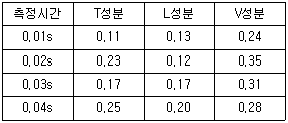
- S=(H+2B)/3
- S=2B
- S=(H+7B)/8
- S=1.4B
(정답률: 알수없음)
23. 다음 중 측벽효과(channel effect)를 줄이는 방법으로 가장 적당한 것은?
- 밀폐장전
- 불완전 전색
- 직렬결선
- 정기폭
(정답률: 알수없음)
24. 발파에 의한 음압수준(dB)이 124dB인 경우는 100dB인 경우에 비해 음압의 크기는 약 몇 배에 해당하는가?
- 1.2배
- 10배
- 12배
- 16배
(정답률: 알수없음)
25. 공발현상이 발생하는 원인으로 가장 거리가 먼 것은?
- 전색이 불충분할 때
- 자유면 형성이 불량할 때
- 저폭속 폭약을 사용할 때
- 발파공 주변에 균열층이 많을 때
(정답률: 알수없음)
26. Cut-off가 일어나는 일반적인 원인이 아닌 것은?
- 발파공을 자유면에 수직 천공할 때
- 천공간격이 너무 협소할 때
- 암반에 예기치 못한 균열이 있을 때
- 전폭약포의 위치가 너무 공구 가까이에 있을 때
(정답률: 알수없음)
27. Hauser의 기본공식으로 옳은 것은? (단, L: 장약량, W: 최소저항선, C: 발파계수, V: 누두공의 부피)
- L = CW3
- V = W2
- C = LW
- L = V2W2
(정답률: 알수없음)
28. 지하철 터널 공사 중 천반, 아치(Arch)부 및 측벽의 장약은 어떤 공법이 적용되는가?
- smooth blasting
- no-cut-round blasting
- bench-cut blasting
- deep-hole blasting
(정답률: 알수없음)
29. 발파공에 장약을 실시한 후 전색하게 되는데, 다음 중 전색물의 조건에 적합하지 않은 것은?
- 연소되어 사라지기 쉬운 것
- 발파공벽과의 마찰이 큰 것
- 발파공을 쉽게 빨리 메울 수 있는 것
- 재료의 구입과 운반이 쉽고 값이 싼 것
(정답률: 알수없음)
30. 계단식(벤치)발파에 대한 설명으로 옳은 것은?
- 계단식 발파시 저면부분에서의 파괴 용이성은 경사천공보다 수직천공을 이용하면 더 양호해 진다.
- 공간 거리를 작게 하고 최소저항선을 크게 하면 파쇄 암편의 크기는 작아진다.
- 초과천공(subdrilling)은 벤치 바닥의 요철을 없애기 위한 목적으로 사용되며 일반적으로 저항거리의 10%를 적용한다.
- Swelling을 위한 발파패턴의 변화방법은 비장약량과 공경은 증가시키고 최소저항선을 감소시켜야 한다.
(정답률: 알수없음)
31. 비산의 원인을 바르게 연결한 것은?
- 장약폭발에 의한 비산 – 천공 오차
- 발파면의 전방비산 - 장벽효과
- 점화순서의 영향에 의한 비산 - 무장약공
- 가스압력에 의한 표면에서의 비산 – 비장약략
(정답률: 알수없음)
32. 발파해체공법 중 선형적 붕괴 진행을 유도함으로써 아파트와 같이 길이가 긴 건축구조물의 해체에 가장 적합한 공법은?
- 단축붕괴공법
- 내파공법
- 점진붕괴공법
- 연속붕괴공법
(정답률: 알수없음)
33. 자유면에 있어서의 반사응력파에 의한 인장파괴이론의 설명으로 틀린 것은?
- 폭원에서 폭약이 폭발하면 압축충격을 암반에 발생시켜서 압축충격파가 전파하게 된다.
- 압축충격파의 파장이 짧을수록 얇은 판모양으로 암반이 파괴 된다.
- 암석은 압축보다는 인장 하에서 파괴가 쉽게 발생한다.
- 암반은 입사할 때의 압축충격파보다 반사할 때의 인장충격파에 더 많이 파괴된다.
(정답률: 알수없음)
34. 다음에서 설명하는 발파 현상으로 맞는 것은?
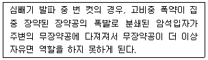
- 소결 현상
- 오버행 현상
- 컷 오프 현상
- 공발 현상
(정답률: 알수없음)
35. 암석은 취성재료로서 인장강도가 압축강도에 비해 1/10~1/20 정도의 수준으로 낮기 때문에 압축파에 파괴되지 않더라도 반사되는 인장파에 의해 파괴될 수 있다. 이러한 파괴 현상을 무엇이라 하는가?
- 라이너 효과
- 홉킨스 효과
- 디커플링 효과
- 노이만 효과
(정답률: 알수없음)
36. 발파 소음과 관련한 설명으로 옳은 것은?
- 회절이란 음파가 장애물을 통과하여 주위로 전파하는 능력이다.
- 암역은 음파가 장애물을 통과하여 주위로 전파하는 능력이다.
- 소음의 전파속도는 기온이 낮을수록 빠르게 된다.
- 낮은 주파수의 음파는 고음에 비해 회절이 어렵다.
(정답률: 알수없음)
37. 폭약의 선택으로 옳은 것은?
- 암석의 강도가 강하여 질산암모늄을 주제로 한 저폭속 폭약을 선택하였다.
- 겨울에 콜로이드 상태인 폭약을 선택하였다.
- 도심지에서 강한 폭력의 폭약을 선택하였다.
- 가연성가스의 위험이 있는 곳에서 소염제가 포함되어 있는 폭약을 선택하였다.
(정답률: 알수없음)
38. 다음과 같이 비전기식뇌관을 이용한 노천발파를 설계하였다. 이 때 가운데 열의 공저뇌관은 475ms 지연시차를 가진 뇌관을 사용하였으며, 바깥쪽 열은 500ms 지연시차를 가진 뇌관을 사용하였다. 지표면의 연결뇌관은 최초 기폭시작점에서는 0ms, 이후 연결부에서는 42ms 지연시차를 사용하였다면, ㉮위치 뇌관의 기폭시차는 얼마인가?
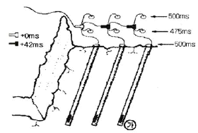
- 500ms
- 517ms
- 542ms
- 584ms
(정답률: 알수없음)
39. Hauser의 기본식에서 n≠1일 때 누두지수를 이용한 장약량 계산식으로 틀린 것은?
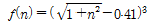
: Dambrun 식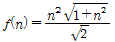
: Marescott 식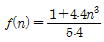
: Brallion 식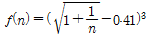
: Lares 식
(정답률: 알수없음)
40. 터널 굴착을 위한 심빼기 발피에 번 컷을 적용하여 3.2m 선공장에 굴진장이 3.04m가 되었다면 무장약공의 공경은 얼마인가? (단, 무장약공과 장약공의 천공장은 동일하다.)
- 76mm
- 89mm
- 102mm
- 127mm
(정답률: 알수없음)
3과목: 암석역학
41. 지름 2cm, 길이 4m인 봉이 축방향으로 단면에 균일한 인장하중을 받고 있다. 이 때 발생한 응력이 1000N/cm2이라면, 이 봉의 체적변형량은? (단, 포아송비는 0.3, 탄성계수는 21MN/cm2이다.)
- 0.014cm3
- 0.024cm3
- 0.034cm3
- 0.044cm3
(정답률: 알수없음)
42. 암석에 주기적으로 여러 차례 반복하여 일정한 크기의 하중을 가할 때 일어나는 파괴현상은?
- 연성파괴
- 지연파괴
- 취성파괴
- 피로파괴
(정답률: 알수없음)
43. 평면응력상태에서 y방향의 변형률(εy)은? (단, σx=400kg/cm2, σy=1000kg/cm2, 탄성계수=2×106kg/cm2, 포아송비=0.3)
- 3.7×10-4
- 4.4×10-4
- 6.5×10-4
- 8.0×10-4
(정답률: 알수없음)
44. 등반성, 이방성과는 종종 혼동해서 사용되고 있지만 한 물체 내의 어느 부분에서도 물리적·화학적으로 동등한 성질을 나타내는 그 물체의 성질은?
- 균질
- 변질
- 등방질
- 불균질
(정답률: 알수없음)
45. 다음 중 비중의 단위는?
- g/cm
- g/cm2
- g/cm3
- 없음
(정답률: 알수없음)
46. 임의의 입방체 물체에 대해 x방향으로 인장 또는 압축시키면 x방향으로의 수직변형률은
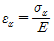
로 표현될 수 있다. 이 경우 y방향 및 z방향으로의 수축(또는 팽창)량을 올바르게 나타낸 것은? (단, v는 포와송비이다.)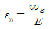
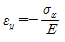
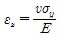
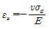
(정답률: 알수없음)
47. 암석의 점하중강도 시험방법 중 잘못된 것은?
- 직경방향시험에서는 길이/직경 비율이 1보다 큰 원주형 시험편을 사용한다.
- 축방향시험에서는 길이/직경 비율이 0.3~1.0인 원주형 시험편을 사용한다.
- 직육면체 시험편의 크기(D)는 50±35mm정도가 적합하다.
- 불규칙 형상 시험편은 접촉점 사이의 거리(D0와 시험편 너비(W)의 비가 1이상 일 때 이상적이다.
(정답률: 알수없음)
48. 다음 중 암반의 초기지압을 측정하는 방법으로 가장 적절한 것은?
- 공내재하시험
- 수압파쇄시험
- Down hole test
- 원위치 전단시험
(정답률: 알수없음)
49. 암반에 존재하는 불연속면 중 어느 면을 경계로 양쪽 암석에 상대적으로 불연속하게 변위가 일어난 부분은?
- 단층
- 절리
- 층리
- 편리
(정답률: 알수없음)
50. 지하 암반에 터널 굴착 시 응력의 이완으로 터널 주변에 발생하는 응력은?
- 유도응력
- 잔류응력
- 지체응력
- 초기응력
(정답률: 알수없음)
51. 암반사면파괴의 파괴가 아닌 것은?
- 쐐기형파괴
- 원주형파괴
- 전도형파괴
- 평면형파괴
(정답률: 알수없음)
52. 초기응력 생성에 영향을 미치는 인자가 아닌 것은?
- 지형
- 지각변동
- 지질구조
- 터널 굴착
(정답률: 알수없음)
53. 다음 암석의 파괴이론 중 Huber-Hencky설은?
- 응력포락선설
- 내부 마찰각설
- 최대 전단응력설
- 전단변형률 에너지설
(정답률: 알수없음)
54. RMR 값이 70으로 평가된 어느 지역 암반의 변형계수는? (단, Bieniawski의 현지 암반 변형계수 추정식을 이용한다.)
- 10GPa
- 20GPa
- 30GPa
- 40GPa
(정답률: 알수없음)
55. 다음 중 터널계측의 목적이 아닌 것은?
- 그라우팅 시공결과의 판정
- 추가보강의 필요여부 결정
- 작업부 배치상황의 적절성 판정
- 장·단기적인 터널의 안정성 평가
(정답률: 알수없음)
56. RQD(암질지수)에 관한 설명으로 옳지 않은 것은?
- Deere(1967)에 의해 제안된 암반의 정량적 평가방법이다.
- RQD산정은 NX-크기 이상의 코어에 대해서 수행되어야 한다.
- 코어를 얻기가 곤란한 경우에는 절리거칠기계수로부터 RQD값을 추정할 수 있다.
- RMR 및 Q-system에 의한 암반분류방법에서 평가요소로 사용되고 있다.
(정답률: 알수없음)
57. 다음 그림은 암석 시험 과정 중 시편에 가해지는 응력 상태를 Mohr 원으로 그려본 결과이다. 어느 시험에 의한 결과인가?
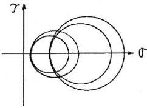
- 굴곡시험
- 삼축압축시험
- 일축압축시험
- 일축인장시험
(정답률: 알수없음)
58. 현지 암반에 대한 표면 동적변형시험을 실시한 결과, P파의 도달시간은 200μsc, S파의 도달시간은 5000μsec로 측정되었다. trigger와 geophone 사이의 거리는 10m, 암반의 평균밀도는 2600kg/m3이었다면 이 암반의 동영률(E)과 동포아송비(v)는 각각 얼마인가?
- E=14.56GPa, v=0.4
- E=14.56GPa, v=0.2
- E=29.12GPa, v=0.4
- E=29.12GPa, v=0.2
(정답률: 알수없음)
59. 건조 암석이 수분을 흡수하게 되면 역학적 성질이 어떻게 변하는가?
- 일반적으로 강도는 약해진다.
- 일반적으로 강도는 강해진다.
- 일반적으로 강도는 약해지고 체적은 감소한다.
- 일반적으로 강도는 강해지고 체적은 증가한다.
(정답률: 알수없음)
60. 암석강도의 특성에 대한 설명으로 옳지 않은 것은?
- 대체로 흡습된 시편은 강도가 저하한다.
- 가압속도가 높을수록 강도는 크게 나타난다.
- 일반적으로 시편을 크게 제작하면 강도가 작게 나타난다.
- 일축압축강도는 원주시편의 경우가 사각주시편보다 작게 나타난다.
(정답률: 알수없음)
4과목: 화약류 안전관리 관계 법규
61. 대발파의 기술상의 기준에 해당하는 것은?
- 300kg 폭약을 사용하더라도 지발뇌관을 사용한 경우는 대발파가 아니다.
- 발파의 계획과 작업은 1급 화약류 관리 보안책임자가 직접 한다.
- 갱도의 굴진작업시에 작업에 필요한 충분한 양을 가지고 들어간다.
- 전기뇌관을 사용한 대발파는 15분 후면 접근이 가능하다.
(정답률: 알수없음)
62. 화약류를 도난, 분실하였을 때 소유자가 즉시 신고하여야 할 것은?
- 화약류관리보안책임자 소속 회사
- 경찰관서
- 관할 도지사
- 행정안전부 장관
(정답률: 알수없음)
63. 화약류 발파 시 대통령령이 정하는 기술상의 기준을 따르지 아니한 사람에 대한 벌칙은?
- 10년 이하의 징역 또는 2천만원 이하의 벌금
- 5년 이하의 징역 또는 1천만원 이하의 벌금
- 3년 이하의 징역 또는 700만원 이하의 벌금
- 2년 이하의 징역 또는 500만원 이하의 벌금
(정답률: 알수없음)
64. 다음 중 화약류 2급 저장소에 저장할 수 없는 화약류는?
- 도폭선
- 전기도화선
- 신호염관
- 미진동파쇄기
(정답률: 알수없음)
65. 꽃불류저장소 주위의 방폭벽의 위치·구조 등의 기준으로 옳지 않은 것은?
- 방폭벽은 두께 10cm 이상의 철근콘크리트조 또는 두께 15cm 이상의 보강콘크리트
- 방폭벽은 꽃불류저장소 바깥벽과의 거리가 2m 이상이 되도록 할 것
- 방폭벽은 꽃불류저장소의 처마높이 이상으로 할 것
- 방폭벽의 출입구에는 그 바깥쪽에 다시 방폭벽을 설치할 것
(정답률: 알수없음)
66. 지하에 설치하는 2급 저장소의 위치·구조 및 설비의 기준에 해당하지 않는 것은?
- 도난을 방지할 수 있는 구조로 할 것
- 안쪽 벽은 철근콘크리트로 할 것
- 저장소의 안에는 특별한 사정이 없는 한 야간에 전등을 켜고 도난방지를 위한 비상벨 등의 장치를 할 것
- 언덕의 경사면 또는 터널 안쪽 벽에 홈을 파고 저장소를 설치할 때에는 그 저장소의 안쪽 벽을 콘크리트 또는 나무의 이중판자로 할 것
(정답률: 알수없음)
67. 화약류관리보안책임자가 법에 의한 지시명령을 2회 위반한 경우 행정추분은?
- 15일 효력정지
- 1월 효력정지
- 3월 효력정지
- 6월 효력정지
(정답률: 알수없음)
68. 화약류 판매업소가 갖추어야 할 시설기준에 해당하지 않는 것은?
- 자가전용의 화약류 저장소의 설치
- 화약류 저장소 입구에 경비초소 설치
- 화약류 저장소에는 차량에 의한 안전운반이 가능하도록 저장소 입구까지 진입로를 개설
- 뇌관 보관을 위한 철제이중내화금고 설치
(정답률: 알수없음)
69. 운반신고를 하지 아니하고 운반할 수 있는 화약류의 종류 및 수량으로 옳은 것은?
- 꽃불류(장난감용: 꽃불류 제외) 5000kg
- 미진동파쇄기: 5000개
- 도폭선: 2000m
- 폭발천공기: 1000개
(정답률: 알수없음)
70. 다음 중 운반표지를 하지 아니하고 운반할 수 있는 화약류의 종류 및 수량으로 옳지 않은 것은?
- 10kg 이하의 화약
- 1천개 이하의 실탄·공포탄
- 2천개 이하의 미진동파쇄기
- 1만개 이하의 총용뇌관
(정답률: 알수없음)
71. 화약류 1급 저장소에 폭약 10톤을 저장할 때 제1종 보안물건과의 보안거리의 기준은?
- 380m 이상
- 340m 이상
- 320m 이상
- 260m 이상
(정답률: 알수없음)
72. 다음 중 화약류관리보안책임자의 결격사유 대상이 아닌 사람은?
- 색맹이거나 색약인 사람
- 화약류관리보안책임자 면허를 갱신하지 않아 동 면허가 취소되어 1년이 지나지 않은 사람
- 총검·도검·화약류 등의 안전관리에 관한 법률을 위반하여 벌금 200만원을 선고받고 확정된 후 3년이 지나지 않은 사람
- 총포·도검·화약류 등의 안전관리에 관한 법률을 위반하여 금고 이상의 형의 집행유예를 선고받고 그 집행유예의 기간이 끝난 날로부터 1년이 지나지 않은 사람
(정답률: 알수없음)
73. 화약류의 안정도 시험 방법 중 유리산 시험에 대한 설명으로 옳지 않은 것은?
- 시험하고자 하는 화약류의 포장지를 제거하고 유리산시험기에 그 용적의 5분의 3이 되돍 시료를 넣은 후 청색리트머스시험지를 시료위에 매달고 마개를 봉한다.
- 시료를 밀봉한 후 청색리트머스시험지가 전면 적색으로 변하는 시간을 유리산시험시간으로 하여 이를 측정한다.
- 질산에스텔 및 그 성분이 들어있는 화약은 유리산시험시간이 6시간 이상인 것을 안정성이 있는 것으로 한다.
- 폭약은 유리산시험시간이 3시간 이상인 것을 안정성이 있는 것으로 한다.
(정답률: 알수없음)
74. 화약류의 안정도시험에 대한 설명으로 옳지 않은 것은?
- 화약류를 수입한 사람은 수입한 날부터 30일 이내에 수입한 화약류에 대한 안정도시험을 하여야 한다.
- 화약류의 안정도를 시험한 사람은 그 시험결과를 경찰청장에게 보고하여야 한다.
- 질산에스텔의 성분이 들어있지 아니한 폭약이라도 제조일로부터 3년이 지나면 안정도시험을 하여야 한다.
- 화약류의 안정도 시험결과 대통령령이 정하는 기술상의 기준에 미달하는 화약류는 폐기하여야 한다.
(정답률: 알수없음)
75. 화약류 판매업자의 결격사유에 해당되는 경우는?
- 기소유예 판결을 받는 사람
- 금고이상의 형의 집행유예선고를 받고 그 집행유예기간이 끝난 후 6개월이 경과한 사람
- 20세의 여자
- 사업을 개시한 후 정당한 사유 없이 1년이상 휴업의 사유로 허가취소처분을 받고 3년 6개월이 경과한 사람
(정답률: 알수없음)
76. 초유폭약은 가연성가스가 몇 % 이상의 장소에서 발파하지 말아야 하는가?
- 0.5%
- 0.7%
- 0.9%
- 1.0%
(정답률: 알수없음)
77. 다음 중 보안물건의 정별 구분으로 옳지 않은 것은?
- 제1종 보안물건 : 학교, 병원, 경기장
- 제2종 보안물건 : 촌락의 주택 및 공원
- 제3종 보안물건 : 공장, 철도, 화약류취급소
- 제4종 보안물건 : 고압전선, 화기취급소
(정답률: 알수없음)
78. 화약류관리보안책임자를 선임하여야 할 화약류사용자로 옳은 것은?
- 화약 또는 폭약을 1개월에 10킬로그램이상 사용하거나 3개월 이상 계속 사용하는 사람
- 화약 또는 폭약을 1개월에 25킬로그램이상 사용하거나 4개월 이상 계속 사용하는 사람
- 화약 또는 폭약을 1개월에 40킬로그램이상 사용하거나 5개월 이상 계속 사용하는 사람
- 화약 또는 폭약을 1개월에 50킬로그램이상 사용하거나 6개월 이상 계속 사용하는 사람
(정답률: 알수없음)
79. 꽃불류의 사용허가신청의 경우 허가신청서에 첨부하여야 하는 서류에 해당하는 것은?
- 사용순서대장
- 제조소명
- 사용계획서
- 화약류저장소의 설치허가증 사본
(정답률: 알수없음)
80. 쏘아 올리는 꽃불류는 얼마 이상의 높이에서 퍼지도록 하여야 하는가?
- 10m
- 20m
- 30m
- 40m
(정답률: 알수없음)